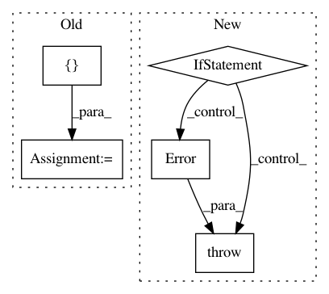

8166563234323a086cd5045dee6eb88f05ce39bf,lib/streamlit/util.py,,open_browser,#Any#,47
Before Change
if env_util.IS_LINUX_OR_BSD:
cmd = ["xdg-open", url]
elif env_util.IS_DARWIN:
cmd = ["open", url]
else:
raise Error("Cannot open browser in platform "%s"" % system)
with open(os.devnull, "w") as devnull:
After Change
if env_util.IS_WINDOWS:
_open_browser_with_webbrowser(url)
return
if env_util.IS_LINUX_OR_BSD:
if env_util.is_executable_in_path("xdg-open"):
_open_browser_with_command("xdg-open", url)
return
_open_browser_with_webbrowser(url)
return
if env_util.IS_DARWIN:
_open_browser_with_command("open", url)
return
import platform
raise Error("Cannot open browser in platform "%s"" % platform.system())
def _open_browser_with_webbrowser(url):
import webbrowser
In pattern: SUPERPATTERN
Frequency: 3
Non-data size: 5
Instances
Project Name: streamlit/streamlit
Commit Name: 8166563234323a086cd5045dee6eb88f05ce39bf
Time: 2019-11-18
Author: monchier@users.noreply.github.com
File Name: lib/streamlit/util.py
Class Name:
Method Name: open_browser
Project Name: GoogleCloudPlatform/PerfKitBenchmarker
Commit Name: ba0e0aa67bd6c8e4a4a92be2e2f6dad10113627e
Time: 2017-01-09
Author: cltorrespr@gmail.com
File Name: perfkitbenchmarker/providers/openstack/os_virtual_machine.py
Class Name: OpenStackVirtualMachine
Method Name: _CreateServerGroup
Project Name: GoogleCloudPlatform/PerfKitBenchmarker
Commit Name: ba0e0aa67bd6c8e4a4a92be2e2f6dad10113627e
Time: 2017-01-09
Author: cltorrespr@gmail.com
File Name: perfkitbenchmarker/providers/openstack/os_network.py
Class Name: OpenStackFloatingIPPool
Method Name: _get_or_create